กระบวนการจัดซื้อจัดจ้าง#
เอกสารนี้สำหรับ :: เจ้าหน้าที่พัสดุ (Procurement Officer)
สร้างเอกสารการเสนอราคา Purchase Agreement/TE จาก PR#
Menu :: Purchase > Orders > Purchase Requests
-
ค้นหารายการ Purchase Request เพื่อสร้าง Purchase Agreement
- เอกสารอนุมัติแล้ว (Approved)
- เอกสารได้รับการมอบหมาย (Purchase Responsible)
- คลิกที่ action, Create Purchase Agreemnt
- ตรวจสอบ Product และ Quantity และกดปุ่ม Create Purchase Agreement
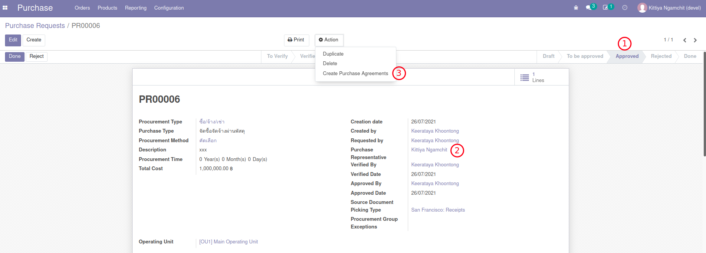
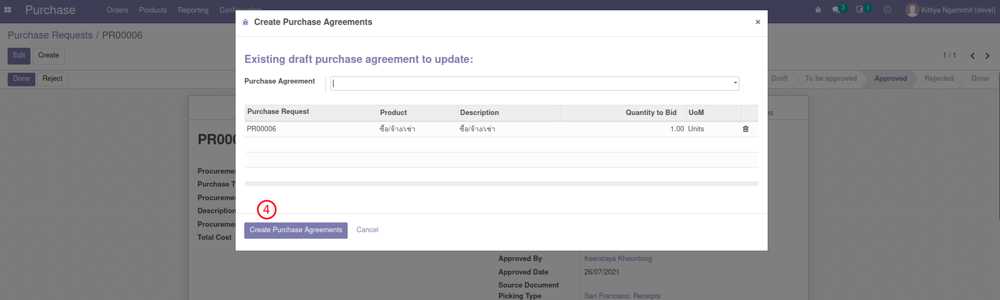
ระบบจะพาไปยังเอกสาร Purchase Agreement (TE) ที่ถูกสร้างขึ้นใหม่ ให้คลิกเพื่อเปิดเอกสาร
-
ตรวจสอบความถูกต้อง และยืนยันเอกสาร TE
- ที่ TE นี้จะเห็น Link กลับไปที่ PR ได้ (ที่ PR จะมี Link กลับมาที่ TE เช่นกัน)
- Purchase Responsible: จะเป็นชื่อของเจ้าหน้าที่พัสดุ (เปลี่ยนแปลงได้หากต้องการโยกงาน)
- Quantity: จำนวนขอซื้อ
- Unit Price: ราคาต่อ 1 หน่วย
- กดปุ่ม Confirm เพื่อยืนยันเอกสาร
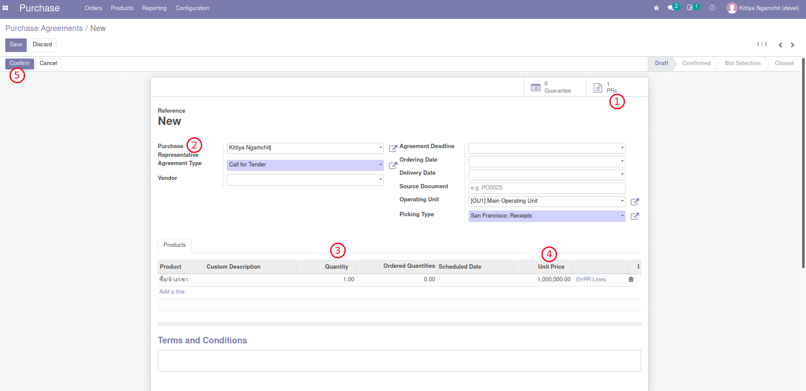
Note
- เอกสาร TE เป็นเสมือนเอกสารตั้งต้นเพื่อเป็นตัวช่วยในการสร้างและติดตาม RFQ ทั้งหมดที่เกี่ยวข้องกับการจัดซื้อจัดจ้างนี้
End.
สร้างใบเสนอราคา RFQ (จาก Purchase Agreement/TE)#
Menu :: Purchase > Orders > Purchase Agreements
- ค้นหาเลขที่ TE ที่ต้องการบันทึกใบเสนอราคาจากผู้ขาย/ผู้ให้บริการ และเปิดเอกสาร TE
-
สร้าง RFQ ตามเอกสารใบเสนอราคาที่ได้รับจากผู้ขาย/ผู้ให้บริการ
- กดปุ่ม New Quotation เพื่อสร้าง RFQ สำหรับแต่ละ Vendor 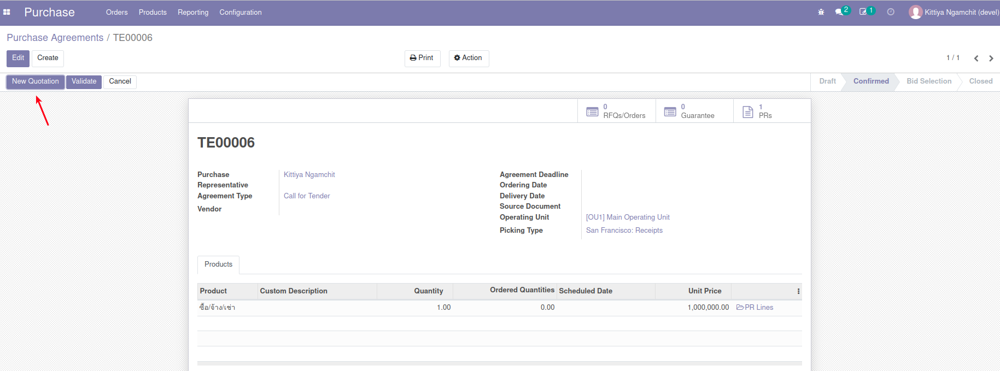
- ที่หน้าต่าง New RFQ ทำการเลือก Vendor
- ปรับยอดเงินตามที่ได้รับข้อเสนอจาก Vendor ที่เลือก
- ย้อนกลับไปที่ TE เพื่อสร้าง RFQ เพิ่มเติมจนครบ (ยังไม่ต้อง Confirm เอกสาร) 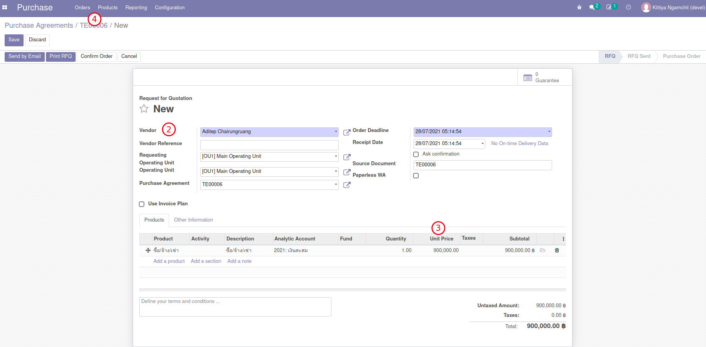
Note
- ในระหว่างนี้ ทางพัสดุอาจมีการปรับแก้ข้อตกลงจาก Vendor บน RFQ เหล่านี้
-
เข้าไป RFQ ที่เลือก ส่ง Email ไปถึง Vendor (ถ้ามี) เช่น ขอนัดหมายวันลงนามในสัญญา 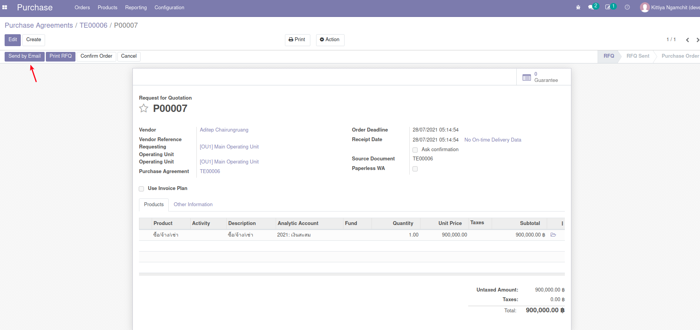 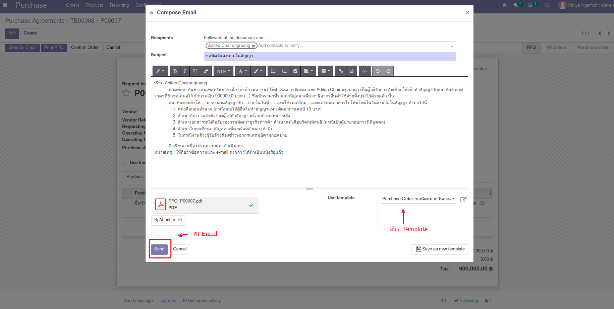
-
ส่งเอกสาร RFQ เข้ากระบวนการอนุมัติจัดซื้อจัดจ้าง
- สำหรับ RFQ ที่เลือก ให้กดปุ่ม Request Validation 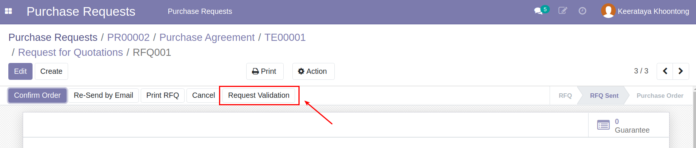
- เอกสารนี้จะเข้ากระบวนการอนุมัติ ซึ่งตารางการอนุมัติจะแสดงอยู่ที่ด้านล่างของเอกสาร 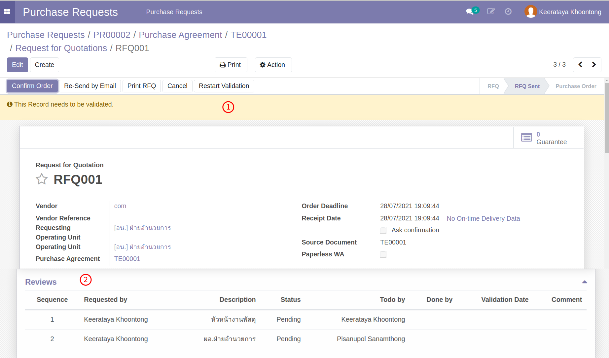
Note
- เอกสาร RFQxxx ที่ส่งเข้ารับการอนุมัติ ในภายหลังเมื่อได้รับการอนุมัติแล้ว
- เอกสารจะเปลี่ยนสถานะเป็น Purchase Order และเลขที่เอกสารจะปลี่ยนเป็น POxxx
- และในเวลาเดียวกัน RFQ อื่นในจะถูกยกเลิก และบันทึกเหตุผลการยกเลิก "ไม่ได้รับการคัดเลือก"
End.
สร้างเอกสารตรวจรับวัสดุ WA จาก PO (ตรวจรับแบบ Paperless WA)#
Note
ขั้นตอนนี้เกิดขึ้นในวันที่มีการตรวจรับจริง
Menu :: Purchase > Orders > Purchase Orders
- เลือก Purchase Order ที่ผ่านการอนุมัติแล้วที่ต้องการสร้างเอกสารตรวจรับ WA
-
กดปุ่ม Create WA ระบบจะพาไปยังหน้าต่าง Work Acceptace พร้อมข้อมูลตั้งต้นจาก PO
- กดปุ่ม Save เพื่อสร้างเอกสาร WA
- แก้ไขข้อมูลการตรวจรับ ตามจำนวนที่รับจริง (Quantity)
- Due Date คือวันที่กำหนดส่งจาก Vendor
- Received Date คือวันที่ได้ตรวจรับจริง (มีผลกับค่าปรับ) 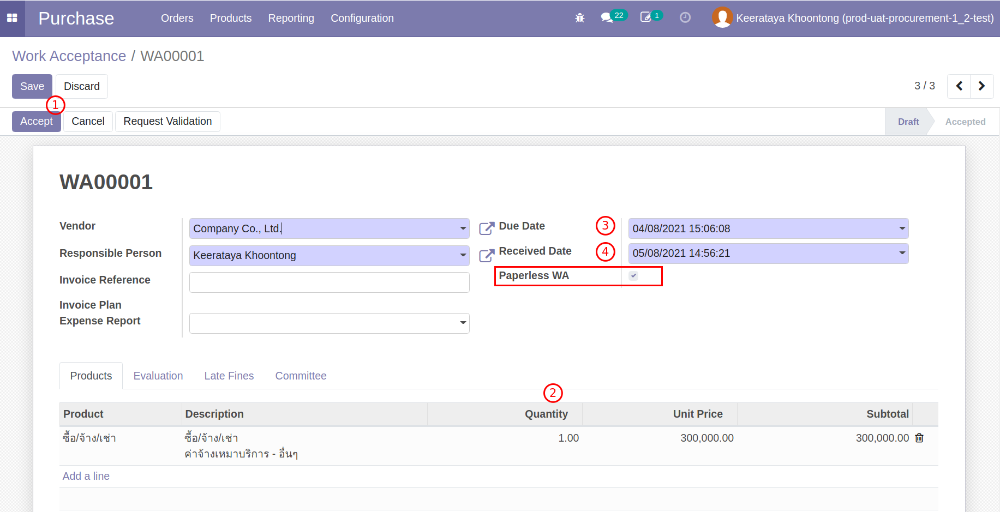
-
ประเมินผลการตรวจรับ (Evaluation)
- ให้คะแนนตามคุณภาพวัสดุส่งมอบในแต่ละหัวจ้อ
- เพิ่มเติมหมายเหตุตามต้องการ 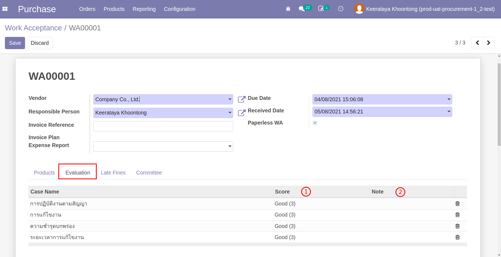
Note
แต่ละหัวข้อการให้คะแนนสามารถปรับเปลี่ยนและตั้งค่าได้ว่าจำเป็นต้องใส่หรือไม่
-
ประเมินค่าปรับ (Late Fines)
- Late Days หรือจำนวนวันที่ล่าช้า คำนวนจากวันส่งจริง และวันที่กำหนดส่ง (Received Date - Due Date)

Note
สำหรับ WA ที่มีค่าปรับจะมีปุ่มเพื่อให้สามารถสร้างใบแจ้งหน้าค่าปรับได้ (เฉพาะผู้ใช้งานที่มีสิทธิ์ในโมดูล Accounting) หรือจะเลือกสร้างจากหน้าต่าง Customer Invoice ก็ได้เช่นกัน

- Late Days หรือจำนวนวันที่ล่าช้า คำนวนจากวันส่งจริง และวันที่กำหนดส่ง (Received Date - Due Date)
-
ตรวจสอบ คณะกรรมการตรวจรับ (Committee)
- รายชื่อคณะกรรมการตรวจรับระบบดึงมาจากเอกสาร Purchase Request ตั้งต้น

- รายชื่อคณะกรรมการตรวจรับระบบดึงมาจากเอกสาร Purchase Request ตั้งต้น
- กดปุ่ม "Request Validation" คณะกรรมการจะเข้ามาในระบบเพื่อบันทึกการตรวจรับพร้อมหมายเหตุ
End.
คณะกรรมกรรการทำการตรวจรับในระบบ#
Menu :: ไม่มีเมนู สามารถเข้าทาง inbox ส่วนตัว
- คณะกรรมการทำการตรวจรับในระบบ
- กรรมการแต่ละคนเข้าถึงเอกสารที่ต้องตรวจรับ (Reviews Inbox) 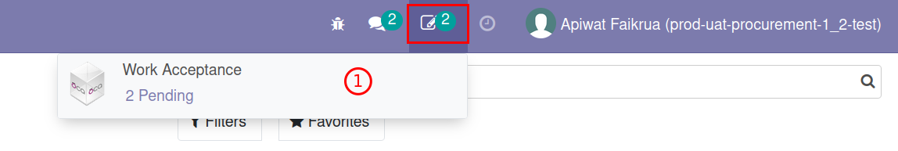
- เลือกผลการตรวจรับ
- Validate: รับ
- Reject: ไม่รับ
- Others: อื่นๆและบอกเหตุผลเช่น ไม่เข้าร่วม 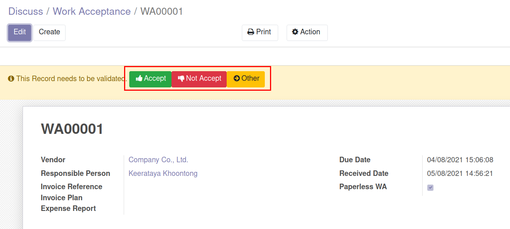
- ผลที่ได้จะกลับไปอัพเดทที่ตาราง Work Acceptance Committee
End.
เจ้าหน้าที่พัสดุเปลี่ยนสถานะเอกสาร WA เป็น Accepted#
Menu :: Purchase > Orders > Work Acceptance
-
ตรวจสอบสถานะของเอกสาร WA บบ Paperless ในระบบ
- ใช้ตัวกรอง Filter ช่วยหาเอกสารที่เป็น Paperless หรือสถานะ Committee
- เอกสารที่่ผ่านการอนุมัติแบบ Paperless จะมีสีเขียนเมื่อผ่านการอนุมัติแล้ว และสีแดงเมื่อมีการปฏิเสธ 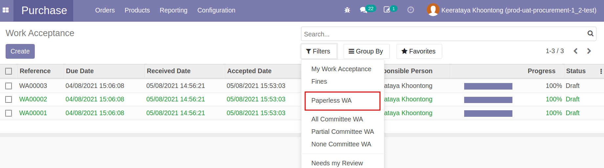
-
ทำการอนุมัติ Accept เอกสาร WA ที่ผ่านการอนุมัติแล้ว (รายการสีเขียว)
- กดปุ่ม Accept เพื่อจบการตรวจรับ 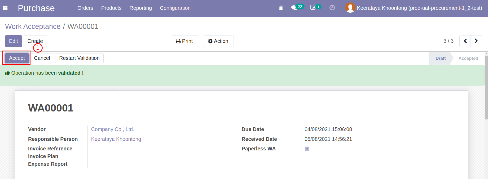
End.
ส่งอีเมล์ใบตรวจรับถึงคู่ค้า เพื่อแจ้งผลการตรวจรับ#
- หลังจากเปลี่ยนสถานะ WA เป็น Accpeted แล้วจะมีปุ่ม Send By Email 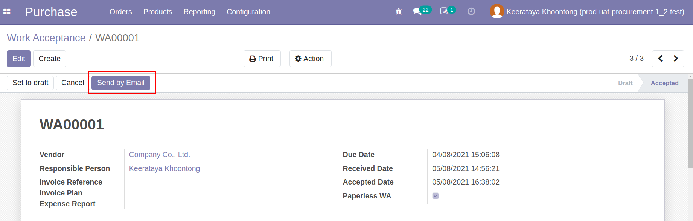
- ระบบแสดงร่างอีเมล์ และสามารถแก้ไขข้อความได้ เมื่อตรวจสอบเนื้อหาเสร็จสิ้น กด Send เพื่อส่งอีเมล์ 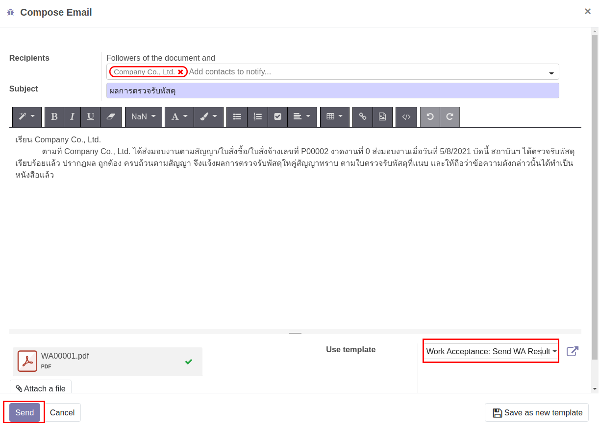
End.